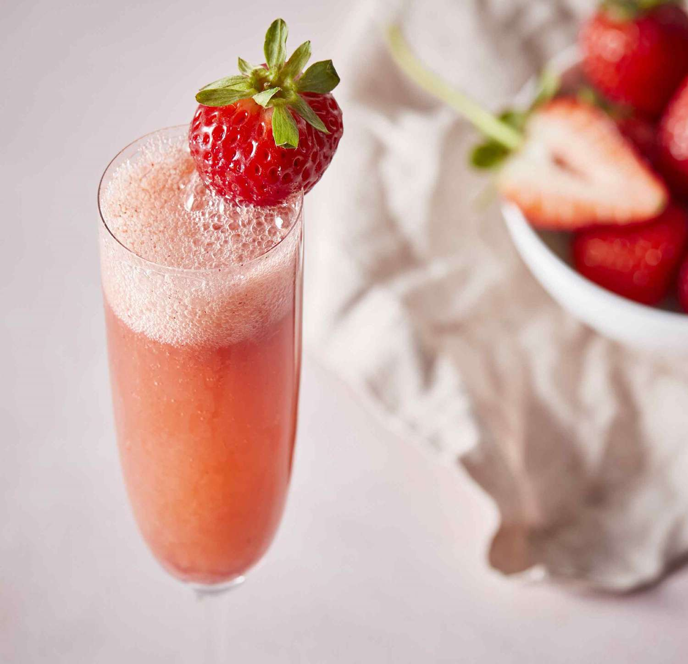

Strawberry Bellini

A strawberry bellini is a nice drink for Mother's Day, a brunch, or a shower.
Ingredients
- 3 cups strawberries, hulled and sliced
- ¼ cup confectioners' sugar
- 1 tablespoon brandy
- 1 ½ cups chilled sparkling wine
- 3 large whole strawberries
Directions
- Blend hulled strawberries, confectioners' sugar, and brandy in a blender until smooth. Chill in the refrigerator for 10 minutes.
- Divide the strawberry mixture among three champagne flutes. Pour 1/2 cup sparkling wine into each flute and stir to combine. Garnish each glass with a whole strawberry.